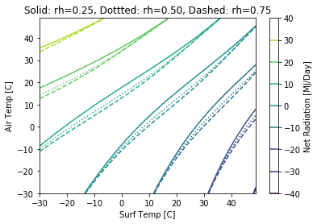

---
redirect_from:
  - "/concepts/water-resources-engineering/hydrologic-processes/incomingradiationcalculations"
interact_link: content/Concepts/Water-Resources-Engineering/Hydrologic-Processes/IncomingRadiationCalculations.ipynb
kernel_name: python3
kernel_path: content/Concepts/Water-Resources-Engineering/Hydrologic-Processes
has_widgets: false
title: |-
  Hydrologic Processes
pagenum: 15
prev_page:
  url: /Concepts/Water-Resources-Engineering/Hydrologic-Processes/Introduction.html
next_page:
  url: /Concepts/Water-Resources-Engineering/River-Engineering/Introduction.html
suffix: .ipynb
search: radiation gamma tau k net cos sin atm l r delta tan atmosphere epsilon appendix d lat frac calculation example incoming solar given year j angle next distance any e sun left right omega total want c cover f et surface longwave where sigma t surf emisivity vapor pressure ea temp important lot processes physical hydrology extraterrestrial latitidue estimate outside earth calcuate pi calculate orbital eccentricity square ratio average calculated need declination between plane equator rays equal latitude directly overhead noon hour rise set tr ts integrated get top plot space show comming varies throughout latititude above must account transmissivitiy

comment: "***PROGRAMMATICALLY GENERATED, DO NOT EDIT. SEE ORIGINAL FILES IN /content***"
---

    <main class="jupyter-page">
    <div id="page-info"></div>
    <div class="jb_cell">

<div class="cell border-box-sizing text_cell rendered"><div class="inner_cell">
<div class="text_cell_render border-box-sizing rendered_html">
<h1 id="Net-Radiation-Calculation-Example">Net Radiation Calculation Example<a class="anchor-link" href="#Net-Radiation-Calculation-Example"> </a></h1><p>The incoming radiation $K_{In}$ is important for a lot of processes in physical hydrology. See appendix D.2 for this</p>
<h2 id="Extraterrestrial-Solar-Radiation">Extraterrestrial Solar Radiation<a class="anchor-link" href="#Extraterrestrial-Solar-Radiation"> </a></h2><p>For a given latitidue ($lat$) and day of year ($J$), we can estimate the radiation outside the earth. First we calcuate the day angle ($\Gamma$)</p>
$$ \Gamma = \frac{2 \pi (J-1)}{365} $$<p></p>
<p>Next we calculate the orbital eccentricity (r0/r) which is the square of the ratio of the average distance, r0, to the distance at any time, r. This is calculated as</p>
$$ E0 = 1.000110 + 0.034221\cos(\Gamma􏰇) + 0.001280\sin(\Gamma􏰇) $$$$ + 0.000719\cos(2\Gamma􏰇) + 0.000077*\sin(2\Gamma􏰇) $$<p>Next we need the solar declination ($\delta$), which is the angle between the plane of the equator and the rays of the sun; it is equal to the latitude at which the sun is directly overhead at noon.</p>
$$ \delta􏰈 = 0.006918 – 0.399912\cos(\Gamma􏰇) + 0.070257\sin(􏰇\Gamma) – 0.006758\cos(2 \Gamma)$$$$  + 0.000907 sin(2\Gamma􏰇) – 0.002697\cos(3\Gamma) + 0.00148\sin(3\Gamma􏰇)$$<p>And the hour that it will rise and set</p>
$$ T_R = -\frac{ \cos^{-1}\left[-\tan(\delta)\tan(lat)\right]}{\omega} $$$$ T_S = +\frac{ \cos^{-1}\left[-\tan(\delta)\tan(lat)\right]}{\omega} $$<p>These are then integrated over the day to get the total radiation at the top of atmosphere.</p>

</div>
</div>
</div>
</div>

<div class="jb_cell">

<div class="cell border-box-sizing code_cell rendered">
<div class="input">

<div class="inner_cell">
    <div class="input_area">
<div class=" highlight hl-ipython3"><pre><span></span><span class="c1"># Import numeric python and the plotting library</span>
<span class="kn">import</span> <span class="nn">numpy</span> <span class="k">as</span> <span class="nn">np</span>
<span class="kn">import</span> <span class="nn">matplotlib.pyplot</span> <span class="k">as</span> <span class="nn">plt</span>
<span class="o">%</span><span class="k">matplotlib</span> inline

<span class="c1"># Solar Constant</span>
<span class="n">S</span> <span class="o">=</span> <span class="mf">4.910</span> <span class="c1"># MJ/hr/m2</span>
<span class="n">omega</span> <span class="o">=</span> <span class="mf">0.2618</span> <span class="c1"># Angular velocity of earth [rad/hr]</span>

<span class="c1"># Example Point and Time</span>
<span class="n">lat</span> <span class="o">=</span> <span class="mf">44.5704</span>
<span class="n">doy</span> <span class="o">=</span> <span class="mi">274</span> <span class="c1"># Oct 1</span>
<span class="n">time</span> <span class="o">=</span> <span class="mi">12</span>

<span class="c1"># Day Angle Calculation</span>
<span class="k">def</span> <span class="nf">getAngle</span><span class="p">(</span><span class="n">doy</span><span class="p">):</span>
    <span class="n">dayAngle</span> <span class="o">=</span> <span class="mi">2</span> <span class="o">*</span> <span class="n">np</span><span class="o">.</span><span class="n">pi</span> <span class="o">*</span> <span class="p">(</span><span class="n">doy</span><span class="o">-</span><span class="mi">1</span><span class="p">)</span><span class="o">/</span><span class="mi">365</span>
    <span class="k">return</span> <span class="n">dayAngle</span>
<span class="nb">print</span><span class="p">(</span><span class="s1">&#39;dAngle&#39;</span><span class="p">,</span><span class="n">getAngle</span><span class="p">(</span><span class="n">doy</span><span class="p">))</span>

<span class="c1"># Declination</span>
<span class="k">def</span> <span class="nf">getDec</span><span class="p">(</span><span class="n">doy</span><span class="p">):</span>
    <span class="n">dAngle</span> <span class="o">=</span> <span class="n">getAngle</span><span class="p">(</span><span class="n">doy</span><span class="p">)</span>
    <span class="n">declination</span> <span class="o">=</span> <span class="p">(</span><span class="mf">0.006918</span> <span class="o">-</span> 
         <span class="mf">0.399912</span><span class="o">*</span><span class="n">np</span><span class="o">.</span><span class="n">cos</span><span class="p">(</span><span class="n">dAngle</span><span class="p">)</span> <span class="o">+</span> 
         <span class="mf">0.070257</span><span class="o">*</span><span class="n">np</span><span class="o">.</span><span class="n">sin</span><span class="p">(</span><span class="n">dAngle</span><span class="p">)</span> <span class="o">-</span> 
         <span class="mf">0.006758</span><span class="o">*</span><span class="n">np</span><span class="o">.</span><span class="n">cos</span><span class="p">(</span><span class="mi">2</span><span class="o">*</span><span class="n">dAngle</span><span class="p">)</span> <span class="o">+</span> 
         <span class="mf">0.000907</span><span class="o">*</span><span class="n">np</span><span class="o">.</span><span class="n">sin</span><span class="p">(</span><span class="mi">2</span><span class="o">*</span><span class="n">dAngle</span><span class="p">)</span> <span class="o">-</span> 
         <span class="mf">0.002697</span><span class="o">*</span><span class="n">np</span><span class="o">.</span><span class="n">cos</span><span class="p">(</span><span class="mi">3</span><span class="o">*</span><span class="n">dAngle</span><span class="p">)</span> <span class="o">+</span> 
         <span class="mf">0.00148</span><span class="o">*</span> <span class="n">np</span><span class="o">.</span><span class="n">sin</span><span class="p">(</span><span class="mi">3</span><span class="o">*</span><span class="n">dAngle</span><span class="p">))</span>
    <span class="k">return</span> <span class="n">declination</span>
<span class="nb">print</span><span class="p">(</span><span class="s1">&#39;declination&#39;</span><span class="p">,</span><span class="n">getDec</span><span class="p">(</span><span class="n">doy</span><span class="p">))</span>

<span class="c1"># Orbital Eccentricity</span>
<span class="k">def</span> <span class="nf">getEcc</span><span class="p">(</span><span class="n">doy</span><span class="p">):</span>
    <span class="n">dAngle</span> <span class="o">=</span> <span class="n">getAngle</span><span class="p">(</span><span class="n">doy</span><span class="p">)</span>
    <span class="n">ecc</span> <span class="o">=</span> <span class="p">(</span><span class="mf">1.000110</span><span class="o">+</span>
      <span class="mf">0.034221</span><span class="o">*</span><span class="n">np</span><span class="o">.</span><span class="n">cos</span><span class="p">(</span><span class="n">dAngle</span><span class="p">)</span><span class="o">+</span>
      <span class="mf">0.001280</span><span class="o">*</span><span class="n">np</span><span class="o">.</span><span class="n">sin</span><span class="p">(</span><span class="n">dAngle</span><span class="p">)</span><span class="o">+</span>
      <span class="mf">0.000719</span><span class="o">*</span><span class="n">np</span><span class="o">.</span><span class="n">cos</span><span class="p">(</span><span class="mi">2</span><span class="o">*</span><span class="n">dAngle</span><span class="p">)</span><span class="o">+</span>
      <span class="mf">0.000077</span><span class="o">*</span><span class="n">np</span><span class="o">.</span><span class="n">sin</span><span class="p">(</span><span class="mi">2</span><span class="o">*</span><span class="n">dAngle</span><span class="p">))</span>
    <span class="k">return</span> <span class="n">ecc</span>
<span class="nb">print</span><span class="p">(</span><span class="s1">&#39;E0:&#39;</span><span class="p">,</span> <span class="n">getEcc</span><span class="p">(</span><span class="n">doy</span><span class="p">))</span>

<span class="c1"># Rise and Set time</span>
<span class="k">def</span> <span class="nf">getTRTS</span><span class="p">(</span><span class="n">doy</span><span class="p">,</span> <span class="n">lat</span><span class="p">):</span>
    <span class="n">declination</span> <span class="o">=</span> <span class="n">getDec</span><span class="p">(</span><span class="n">doy</span><span class="p">)</span>
    <span class="n">TR</span> <span class="o">=</span> <span class="o">-</span><span class="n">np</span><span class="o">.</span><span class="n">arccos</span><span class="p">(</span><span class="o">-</span><span class="n">np</span><span class="o">.</span><span class="n">tan</span><span class="p">(</span><span class="n">declination</span><span class="p">)</span><span class="o">*</span><span class="n">np</span><span class="o">.</span><span class="n">tan</span><span class="p">(</span><span class="n">lat</span><span class="p">))</span><span class="o">/</span><span class="n">omega</span>
    <span class="n">TS</span> <span class="o">=</span> <span class="o">+</span><span class="n">np</span><span class="o">.</span><span class="n">arccos</span><span class="p">(</span><span class="o">-</span><span class="n">np</span><span class="o">.</span><span class="n">tan</span><span class="p">(</span><span class="n">declination</span><span class="p">)</span><span class="o">*</span><span class="n">np</span><span class="o">.</span><span class="n">tan</span><span class="p">(</span><span class="n">lat</span><span class="p">))</span><span class="o">/</span><span class="n">omega</span>
    <span class="k">return</span> <span class="n">TR</span><span class="p">,</span> <span class="n">TS</span>
<span class="nb">print</span><span class="p">(</span><span class="s1">&#39;TR, TS:&#39;</span><span class="p">,</span><span class="n">getTRTS</span><span class="p">(</span><span class="n">doy</span><span class="p">,</span><span class="n">lat</span><span class="p">))</span>

<span class="c1"># Daily Total Extraterrestrial Solar Radiation [MJ/day]</span>
<span class="k">def</span> <span class="nf">getKE</span><span class="p">(</span><span class="n">doy</span><span class="p">,</span><span class="n">lat</span><span class="p">):</span>
    <span class="n">declination</span> <span class="o">=</span> <span class="n">getDec</span><span class="p">(</span><span class="n">doy</span><span class="p">)</span>
    <span class="n">ecc</span> <span class="o">=</span> <span class="n">getEcc</span><span class="p">(</span><span class="n">doy</span><span class="p">)</span>
    <span class="n">TR</span><span class="p">,</span> <span class="n">TS</span> <span class="o">=</span> <span class="n">getTRTS</span><span class="p">(</span><span class="n">doy</span><span class="p">,</span><span class="n">lat</span><span class="p">)</span>
    <span class="n">KE</span> <span class="o">=</span> <span class="mi">2</span><span class="o">*</span><span class="n">S</span><span class="o">*</span><span class="n">ecc</span><span class="o">*</span><span class="p">(</span>
        <span class="n">np</span><span class="o">.</span><span class="n">sin</span><span class="p">(</span><span class="n">lat</span><span class="p">)</span><span class="o">*</span><span class="n">np</span><span class="o">.</span><span class="n">sin</span><span class="p">(</span><span class="n">declination</span><span class="p">)</span><span class="o">*</span><span class="n">TS</span> <span class="o">+</span> 
        <span class="n">np</span><span class="o">.</span><span class="n">cos</span><span class="p">(</span><span class="n">lat</span><span class="p">)</span><span class="o">*</span><span class="n">np</span><span class="o">.</span><span class="n">cos</span><span class="p">(</span><span class="n">declination</span><span class="p">)</span><span class="o">*</span><span class="n">np</span><span class="o">.</span><span class="n">sin</span><span class="p">(</span><span class="n">omega</span><span class="o">*</span><span class="n">TS</span><span class="p">)</span><span class="o">/</span><span class="n">omega</span><span class="p">)</span>
    <span class="k">return</span> <span class="n">KE</span>
<span class="nb">print</span><span class="p">(</span><span class="s1">&#39;KE&#39;</span><span class="p">,</span><span class="n">getKE</span><span class="p">(</span><span class="n">doy</span><span class="p">,</span><span class="n">lat</span><span class="p">))</span>
</pre></div>

    </div>
</div>
</div>

<div class="output_wrapper">
<div class="output">

<div class="jb_output_wrapper }}">
<div class="output_area">

<div class="output_subarea output_stream output_stdout output_text">
<pre>dAngle 4.69947832564391
declination -0.05001654180216839
E0: 0.9976715311345575
TR, TS: (-5.872462497537448, 5.872462497537448)
KE 29.483025393557497
</pre>
</div>
</div>
</div>
</div>
</div>

</div>
</div>

<div class="jb_cell">

<div class="cell border-box-sizing text_cell rendered"><div class="inner_cell">
<div class="text_cell_render border-box-sizing rendered_html">
<h1 id="Plot-radiation-in-space-and-time">Plot radiation in space and time<a class="anchor-link" href="#Plot-radiation-in-space-and-time"> </a></h1><p>We want to show how in comming radiation varies throughout the year by latititude</p>

</div>
</div>
</div>
</div>

<div class="jb_cell">

<div class="cell border-box-sizing code_cell rendered">
<div class="input">

<div class="inner_cell">
    <div class="input_area">
<div class=" highlight hl-ipython3"><pre><span></span><span class="n">days</span> <span class="o">=</span> <span class="n">np</span><span class="o">.</span><span class="n">arange</span><span class="p">(</span><span class="mi">365</span><span class="p">)</span>
<span class="n">lats</span> <span class="o">=</span> <span class="p">[</span><span class="mi">0</span><span class="p">,</span><span class="mi">30</span><span class="p">,</span><span class="mi">60</span><span class="p">]</span>

<span class="c1"># Empty matrix to hold output</span>
<span class="n">matKE</span> <span class="o">=</span> <span class="n">np</span><span class="o">.</span><span class="n">zeros</span><span class="p">((</span><span class="nb">len</span><span class="p">(</span><span class="n">days</span><span class="p">),</span><span class="nb">len</span><span class="p">(</span><span class="n">lats</span><span class="p">)))</span><span class="o">*</span><span class="n">np</span><span class="o">.</span><span class="n">nan</span>

<span class="c1"># For loops:</span>
<span class="n">plt</span><span class="o">.</span><span class="n">figure</span><span class="p">(</span><span class="mi">1</span><span class="p">)</span>
<span class="k">for</span> <span class="n">l</span> <span class="ow">in</span> <span class="n">np</span><span class="o">.</span><span class="n">arange</span><span class="p">(</span><span class="nb">len</span><span class="p">(</span><span class="n">lats</span><span class="p">)):</span>
    <span class="k">for</span> <span class="n">d</span> <span class="ow">in</span> <span class="n">np</span><span class="o">.</span><span class="n">arange</span><span class="p">(</span><span class="nb">len</span><span class="p">(</span><span class="n">days</span><span class="p">)):</span>
        <span class="n">curDay</span> <span class="o">=</span> <span class="n">days</span><span class="p">[</span><span class="n">d</span><span class="p">]</span>
        <span class="n">curLat</span> <span class="o">=</span> <span class="n">lats</span><span class="p">[</span><span class="n">l</span><span class="p">]</span><span class="o">*</span><span class="n">np</span><span class="o">.</span><span class="n">pi</span><span class="o">/</span><span class="mi">180</span>
        <span class="n">matKE</span><span class="p">[</span><span class="n">d</span><span class="p">,</span><span class="n">l</span><span class="p">]</span> <span class="o">=</span> <span class="n">getKE</span><span class="p">(</span><span class="n">curDay</span><span class="p">,</span><span class="n">curLat</span><span class="p">)</span>
    <span class="n">plt</span><span class="o">.</span><span class="n">plot</span><span class="p">(</span><span class="n">days</span><span class="p">,</span><span class="n">matKE</span><span class="p">[:,</span><span class="n">l</span><span class="p">])</span>
    <span class="n">plt</span><span class="o">.</span><span class="n">text</span><span class="p">(</span><span class="mi">366</span><span class="p">,</span><span class="n">matKE</span><span class="p">[</span><span class="n">d</span><span class="p">,</span><span class="n">l</span><span class="p">],</span><span class="s1">&#39;</span><span class="si">%d</span><span class="s1">$^o$&#39;</span><span class="o">%</span><span class="k">lats</span>[l])
    <span class="n">plt</span><span class="o">.</span><span class="n">xlim</span><span class="p">(</span><span class="o">-</span><span class="mi">25</span><span class="p">,</span><span class="mi">365</span><span class="o">+</span><span class="mi">25</span><span class="p">)</span>
<span class="n">plt</span><span class="o">.</span><span class="n">xlabel</span><span class="p">(</span><span class="s1">&#39;Day of year&#39;</span><span class="p">)</span>
<span class="n">plt</span><span class="o">.</span><span class="n">ylabel</span><span class="p">(</span><span class="s1">&#39;Top of atmosphere radiation [MJ/day]&#39;</span><span class="p">)</span>        
<span class="n">plt</span><span class="o">.</span><span class="n">show</span><span class="p">()</span>
</pre></div>

    </div>
</div>
</div>

<div class="output_wrapper">
<div class="output">

<div class="jb_output_wrapper }}">
<div class="output_area">


<div class="output_png output_subarea ">

</div>

</div>
</div>
</div>
</div>

</div>
</div>

<div class="jb_cell">

<div class="cell border-box-sizing text_cell rendered"><div class="inner_cell">
<div class="text_cell_render border-box-sizing rendered_html">
<h2 id="Net-Radiation">Net Radiation<a class="anchor-link" href="#Net-Radiation"> </a></h2><p>Given that we have the radiation above the atmosphere, we must account for the transmissivitiy of the atmosphere ($\tau_{atm}$), of clouds ($\tau_{C}$) and of forest/plant cover ($\tau_{F}$). This can be expressed as</p>
$$ K_{in} = \tau_{atm}\tau_{C}\tau_{F}K_{ET} $$<p>($\tau_{atm}$), it's cloud cover ($\tau_{cc}$), and any vegetation ($\tau_{veg}$). All these things can decrease radiation and can be estimated from Appendix D or Chapter 5.</p>
<p>For the context of this example we'll assume $\tau_{total}=0.75$, i.e. $K_{in}$ = 0.75 $K_{ET}$; but see Appendix D for more detailed calculation methods. Finally, the net shortwave radiation is determined by the albedo of the surface as:</p>
$$ K_{net} = K_{In}-K_{out} = (1-a) K_{in} $$<p>For the longwave radiation, we have a similar balance as</p>
$$ L_{net} = L_{In}-L_{out} $$<p>where the incoming and outgoing longwave energy is a function of the temperature (following Stephan-Boltzman).</p>
$$ L_{in} = \epsilon_{atm} \sigma T_{atm}^4 $$$$ L_{in} = \epsilon_{surf} \sigma T_{surf}^4 $$<p>with $\epsilon$ the emisivity of the media. Here we adjust the emisivity of the atmosphere based on the vapor pressure as:</p>
$$ \epsilon = 0.83 - 0.18 \exp(-1.54 e_a) $$<p>where $e_a$ is the atmospheric vapor pressure</p>

</div>
</div>
</div>
</div>

<div class="jb_cell">

<div class="cell border-box-sizing code_cell rendered">
<div class="input">

<div class="inner_cell">
    <div class="input_area">
<div class=" highlight hl-ipython3"><pre><span></span><span class="c1"># Surfce Condtions and Constants</span>
<span class="n">albedo</span> <span class="o">=</span> <span class="mf">0.5</span> <span class="c1"># For snow</span>
<span class="n">tAir</span> <span class="o">=</span> <span class="mi">40</span>
<span class="n">rh</span> <span class="o">=</span> <span class="mf">0.6</span>
<span class="n">tSurf</span> <span class="o">=</span> <span class="mi">0</span>
<span class="n">tau</span> <span class="o">=</span> <span class="mf">0.75</span>

<span class="c1"># Calcuate net shortwave</span>
<span class="k">def</span> <span class="nf">getKnet</span><span class="p">(</span><span class="n">doy</span><span class="p">,</span><span class="n">lat</span><span class="p">,</span><span class="n">albedo</span><span class="p">,</span><span class="n">tau</span><span class="p">):</span>
    <span class="n">KE</span> <span class="o">=</span> <span class="n">getKE</span><span class="p">(</span><span class="n">doy</span><span class="p">,</span><span class="n">lat</span><span class="p">)</span>
    <span class="n">Knet</span> <span class="o">=</span> <span class="p">(</span><span class="mi">1</span><span class="o">-</span><span class="n">albedo</span><span class="p">)</span> <span class="o">*</span> <span class="n">tau</span> <span class="o">*</span><span class="n">KE</span> 
    <span class="k">return</span> <span class="n">Knet</span>
<span class="nb">print</span><span class="p">(</span><span class="s1">&#39;Knet&#39;</span><span class="p">,</span><span class="n">getKnet</span><span class="p">(</span><span class="n">doy</span><span class="p">,</span><span class="n">lat</span><span class="p">,</span><span class="n">albedo</span><span class="p">,</span><span class="n">tau</span><span class="p">))</span>

<span class="c1"># Incoming Longwave</span>
<span class="k">def</span> <span class="nf">getLnet</span><span class="p">(</span><span class="n">tAir</span><span class="p">,</span><span class="n">tSurf</span><span class="p">,</span><span class="n">rh</span><span class="p">):</span>
    <span class="n">sb_constant</span> <span class="o">=</span> <span class="mf">4.90</span> <span class="o">*</span> <span class="mi">10</span><span class="o">**-</span><span class="mi">9</span> <span class="c1"># [MJ/m2 k4 day]</span>
    <span class="n">e_atm</span> <span class="o">=</span> <span class="mf">0.611</span><span class="o">*</span><span class="n">np</span><span class="o">.</span><span class="n">exp</span><span class="p">(</span><span class="mf">17.3</span><span class="o">*</span><span class="n">tAir</span><span class="o">/</span><span class="p">(</span><span class="n">tAir</span><span class="o">+</span><span class="mf">237.3</span><span class="p">))</span><span class="o">*</span><span class="n">rh</span>
    <span class="n">eps_atm</span> <span class="o">=</span> <span class="mf">0.83</span> <span class="o">-</span> <span class="mf">0.18</span><span class="o">*</span><span class="n">np</span><span class="o">.</span><span class="n">exp</span><span class="p">(</span><span class="o">-</span><span class="mf">1.54</span><span class="o">*</span><span class="n">e_atm</span><span class="p">)</span>
    <span class="c1"># Incoming longwave</span>
    <span class="n">Lin</span> <span class="o">=</span> <span class="n">eps_atm</span> <span class="o">*</span> <span class="n">sb_constant</span> <span class="o">*</span> <span class="p">(</span><span class="n">tAir</span><span class="o">+</span><span class="mf">273.15</span><span class="p">)</span><span class="o">**</span><span class="mi">4</span>
    <span class="c1"># Outgoing Longwave</span>
    <span class="n">eps_snow</span> <span class="o">=</span> <span class="mi">1</span>
    <span class="n">Lout</span> <span class="o">=</span> <span class="n">eps_snow</span> <span class="o">*</span> <span class="n">sb_constant</span> <span class="o">*</span> <span class="p">(</span><span class="n">tSurf</span><span class="o">+</span><span class="mf">273.15</span><span class="p">)</span><span class="o">**</span><span class="mi">4</span>
    <span class="c1"># Net Longwave</span>
    <span class="n">Lnet</span> <span class="o">=</span> <span class="n">Lin</span> <span class="o">-</span> <span class="n">Lout</span>
    <span class="k">return</span> <span class="n">Lnet</span>
<span class="nb">print</span><span class="p">(</span><span class="s1">&#39;Lnet&#39;</span><span class="p">,</span><span class="n">getLnet</span><span class="p">(</span><span class="n">tAir</span><span class="p">,</span><span class="n">tSurf</span><span class="p">,</span><span class="n">rh</span><span class="p">))</span>

<span class="c1"># Total Net Radiation </span>
<span class="k">def</span> <span class="nf">getRnet</span><span class="p">(</span><span class="n">doy</span><span class="p">,</span><span class="n">lat</span><span class="p">,</span><span class="n">albedo</span><span class="p">,</span><span class="n">tau</span><span class="p">,</span> <span class="n">tAir</span><span class="p">,</span><span class="n">tSurf</span><span class="p">,</span><span class="n">rh</span><span class="p">):</span>
    <span class="n">Rnet</span> <span class="o">=</span> <span class="n">getKnet</span><span class="p">(</span><span class="n">doy</span><span class="p">,</span><span class="n">lat</span><span class="p">,</span><span class="n">albedo</span><span class="p">,</span><span class="n">tau</span><span class="p">)</span> <span class="o">+</span> <span class="n">getLnet</span><span class="p">(</span><span class="n">tAir</span><span class="p">,</span><span class="n">tSurf</span><span class="p">,</span><span class="n">rh</span><span class="p">)</span>
    <span class="k">return</span> <span class="n">Rnet</span>
<span class="nb">print</span><span class="p">(</span><span class="s1">&#39;Net Radiation:&#39;</span><span class="p">,</span><span class="n">getRnet</span><span class="p">(</span><span class="n">doy</span><span class="p">,</span><span class="n">lat</span><span class="p">,</span><span class="n">albedo</span><span class="p">,</span><span class="n">tau</span><span class="p">,</span> <span class="n">tAir</span><span class="p">,</span><span class="n">tSurf</span><span class="p">,</span><span class="n">rh</span><span class="p">))</span>
</pre></div>

    </div>
</div>
</div>

<div class="output_wrapper">
<div class="output">

<div class="jb_output_wrapper }}">
<div class="output_area">

<div class="output_subarea output_stream output_stdout output_text">
<pre>Knet 11.056134522584061
Lnet 11.823357720582674
Net Radiation: 22.879492243166737
</pre>
</div>
</div>
</div>
</div>
</div>

</div>
</div>

<div class="jb_cell">

<div class="cell border-box-sizing text_cell rendered"><div class="inner_cell">
<div class="text_cell_render border-box-sizing rendered_html">
<h1 id="Variation-in-Net-Radiation">Variation in Net Radiation<a class="anchor-link" href="#Variation-in-Net-Radiation"> </a></h1><p>Now we want to explore how air temp, surface temp, and relative humdiity influence net radiation.</p>

</div>
</div>
</div>
</div>

<div class="jb_cell">

<div class="cell border-box-sizing code_cell rendered">
<div class="input">

<div class="inner_cell">
    <div class="input_area">
<div class=" highlight hl-ipython3"><pre><span></span><span class="n">v1</span> <span class="o">=</span> <span class="n">np</span><span class="o">.</span><span class="n">arange</span><span class="p">(</span><span class="o">-</span><span class="mi">30</span><span class="p">,</span><span class="mi">50</span><span class="p">,</span><span class="mi">1</span><span class="p">);</span> <span class="c1"># Tair</span>
<span class="n">v2</span> <span class="o">=</span> <span class="n">np</span><span class="o">.</span><span class="n">arange</span><span class="p">(</span><span class="o">-</span><span class="mi">30</span><span class="p">,</span><span class="mi">50</span><span class="p">,</span><span class="mi">1</span><span class="p">);</span> <span class="c1"># Tsurf</span>
<span class="n">v3</span> <span class="o">=</span> <span class="n">np</span><span class="o">.</span><span class="n">array</span><span class="p">([</span><span class="mf">0.25</span><span class="p">,</span> <span class="mf">0.5</span><span class="p">,</span> <span class="mf">0.75</span><span class="p">]);</span> <span class="c1"># Relative Humidity </span>
<span class="n">outMat</span> <span class="o">=</span> <span class="n">np</span><span class="o">.</span><span class="n">zeros</span><span class="p">((</span><span class="nb">len</span><span class="p">(</span><span class="n">v1</span><span class="p">),</span><span class="nb">len</span><span class="p">(</span><span class="n">v2</span><span class="p">),</span><span class="nb">len</span><span class="p">(</span><span class="n">v3</span><span class="p">)))</span>

<span class="c1"># Evaluate Different Condtions</span>
<span class="k">for</span> <span class="n">i</span> <span class="ow">in</span> <span class="n">np</span><span class="o">.</span><span class="n">arange</span><span class="p">(</span><span class="nb">len</span><span class="p">(</span><span class="n">v1</span><span class="p">)):</span>
    <span class="k">for</span> <span class="n">j</span> <span class="ow">in</span> <span class="n">np</span><span class="o">.</span><span class="n">arange</span><span class="p">(</span><span class="nb">len</span><span class="p">(</span><span class="n">v2</span><span class="p">)):</span>
        <span class="k">for</span> <span class="n">k</span> <span class="ow">in</span> <span class="n">np</span><span class="o">.</span><span class="n">arange</span><span class="p">(</span><span class="nb">len</span><span class="p">(</span><span class="n">v3</span><span class="p">)):</span>
            <span class="n">cV1</span> <span class="o">=</span> <span class="n">v1</span><span class="p">[</span><span class="n">i</span><span class="p">]</span>
            <span class="n">cV2</span> <span class="o">=</span> <span class="n">v2</span><span class="p">[</span><span class="n">j</span><span class="p">]</span>
            <span class="n">cV3</span> <span class="o">=</span> <span class="n">v3</span><span class="p">[</span><span class="n">k</span><span class="p">]</span>
            <span class="n">outMat</span><span class="p">[</span><span class="n">i</span><span class="p">,</span><span class="n">j</span><span class="p">,</span><span class="n">k</span><span class="p">]</span> <span class="o">=</span> <span class="n">getRnet</span><span class="p">(</span><span class="n">doy</span><span class="p">,</span><span class="n">lat</span><span class="p">,</span><span class="n">albedo</span><span class="p">,</span><span class="n">tau</span><span class="p">,</span><span class="n">cV1</span><span class="p">,</span><span class="n">cV2</span><span class="p">,</span><span class="n">cV3</span><span class="p">)</span>

<span class="c1"># Make A Plot</span>
<span class="n">plt</span><span class="o">.</span><span class="n">figure</span><span class="p">(</span><span class="mi">2</span><span class="p">)</span>
<span class="n">plt</span><span class="o">.</span><span class="n">contour</span><span class="p">(</span><span class="n">v1</span><span class="p">,</span><span class="n">v2</span><span class="p">,</span><span class="n">outMat</span><span class="p">[:,:,</span><span class="mi">0</span><span class="p">],</span><span class="n">label</span><span class="o">=</span><span class="s1">&#39;Tau&#39;</span><span class="p">)</span>
<span class="n">plt</span><span class="o">.</span><span class="n">contour</span><span class="p">(</span><span class="n">v1</span><span class="p">,</span><span class="n">v2</span><span class="p">,</span><span class="n">outMat</span><span class="p">[:,:,</span><span class="mi">1</span><span class="p">],</span><span class="n">linestyles</span><span class="o">=</span><span class="s1">&#39;:&#39;</span><span class="p">)</span>
<span class="n">plt</span><span class="o">.</span><span class="n">contour</span><span class="p">(</span><span class="n">v1</span><span class="p">,</span><span class="n">v2</span><span class="p">,</span><span class="n">outMat</span><span class="p">[:,:,</span><span class="mi">2</span><span class="p">],</span><span class="n">linestyles</span><span class="o">=</span><span class="s1">&#39;--&#39;</span><span class="p">)</span>
<span class="n">plt</span><span class="o">.</span><span class="n">xlabel</span><span class="p">(</span><span class="s1">&#39;Surf Temp [C]&#39;</span><span class="p">);</span> <span class="n">plt</span><span class="o">.</span><span class="n">ylabel</span><span class="p">(</span><span class="s1">&#39;Air Temp [C]&#39;</span><span class="p">)</span>
<span class="n">plt</span><span class="o">.</span><span class="n">title</span><span class="p">(</span><span class="s1">&#39;Solid: rh=</span><span class="si">%.2f</span><span class="s1">, Dottted: rh=</span><span class="si">%.2f</span><span class="s1">, Dashed: rh=</span><span class="si">%.2f</span><span class="s1">&#39;</span><span class="o">%</span> <span class="p">(</span><span class="n">v3</span><span class="p">[</span><span class="mi">0</span><span class="p">],</span><span class="n">v3</span><span class="p">[</span><span class="mi">1</span><span class="p">],</span><span class="n">v3</span><span class="p">[</span><span class="mi">2</span><span class="p">]))</span>
<span class="n">plt</span><span class="o">.</span><span class="n">colorbar</span><span class="p">(</span><span class="n">label</span><span class="o">=</span><span class="s1">&#39;Net Radiation [MJ/Day]&#39;</span><span class="p">);</span>
<span class="n">plt</span><span class="o">.</span><span class="n">show</span><span class="p">()</span>
</pre></div>

    </div>
</div>
</div>

<div class="output_wrapper">
<div class="output">

<div class="jb_output_wrapper }}">
<div class="output_area">

<div class="output_subarea output_stream output_stderr output_text">
<pre>/anaconda3/lib/python3.6/site-packages/matplotlib/contour.py:1000: UserWarning: The following kwargs were not used by contour: &#39;label&#39;
  s)
</pre>
</div>
</div>
</div>
<div class="jb_output_wrapper }}">
<div class="output_area">


<div class="output_png output_subarea ">

</div>

</div>
</div>
</div>
</div>

</div>
</div>

 


    </main>
    